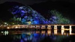
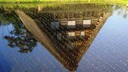
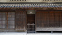
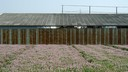
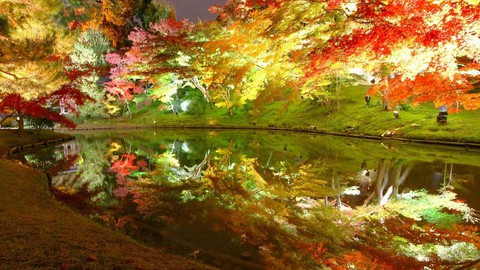
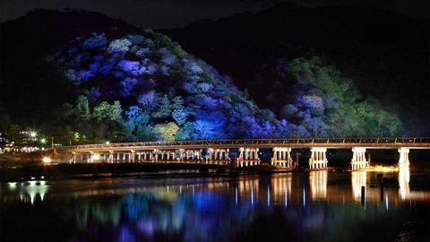
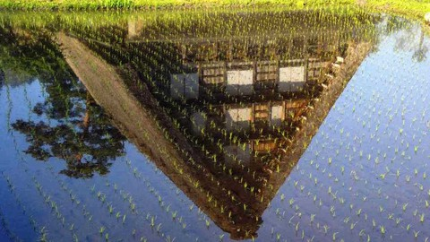
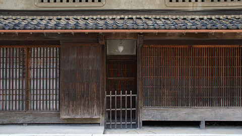

壁紙化：ネットで拾った背景用画像 その１
ネットで拾った写真を拡大縮小＆カットで 1920x1080 壁紙にした。 National Geographics にあったものや 2ch まとめ系や NAVER、あと読んでる個人の Twitter や Tumblr から拾ったものなんかもある。それらは結構な枚数があるので何回かにわけて紹介していく。カットする関係で見映えのバランスからロゴ部分は落としてしまうことが多いが、別に正体を不明にする意図はない。なお、画像のファイル名は私が勝手に付けていて元の題を反映していない。 今回は和風な風景を集めている。



なお、この個別ページは検索よけのメタタグを設定しており、検索よけしてないブログトップやカテゴリトップでは、本体へのリンクのない極小画像しか表示されない配慮をしている。その上で、できるだけ公式なサイトへのリンクをし、ブログ主本人によるリファラ付きのクリックを一度はしている。(これらの点について《デスクトップ壁紙公開についてのこのサイトのポリシー》で少し詳しい説明をしてある。) ここに貼付した縮小画像そのものは「引用」の範囲に留まると私は思っているが、出所明示を欠いている。出所は今となっては不明なものが多く、その点は Google の画像で検索等が使えればいいのだが、カットしてたりするので、うまく検索できないかもしれない。カット前の画像は探せば残っているはずなので、必要な方は申し出ていただければ「同好の士という枠で個人的に」元画像を渡すことはできると思う。 ここより下に貼ってある縮小画像をクリックすると、大きな壁紙がダウンロードされるはず。(一日100枚以上のダウンロードがあったあとなど、しばらくダウンロード用リンクが停止されることがあります。そうなっていたら、すみません。) ■steps_of_red_spider_lily.jpg 元のファイル名は hirame132054.jpg で 1024x768 の大きさ。 ■lighted_yellow_leaves.jpg
元のファイル名は zipyaru-20091229-40-00022.jpg で 1280x800 の大きさ。 ■night_japanese_bridge.jpg
元のファイル名は zipyaru-20091229-09-00001.jpg で 1800x1200 の大きさ。 ■local_field.jpg
元のファイル名は zipyaru-20091229-40-00038.jpg で 1100x736 の大きさ。 ■japanese_gateway.jpg
元のファイル名は 9948074b.jpg で 800x536 の大きさ。 ■vetch.jpg なお、この vetch.jpg は例外的に自分で近所で撮影したものなので、著作権上は問題がない。ただし、あえて問題にするなら、公道から普通に見えるところだが、これは「私有地」で、特に許可を得ていないということだろう。これは例えば Google の Google Street View の核心的利益に関係する。 更新：2013-09-25 初公開：2013年09月25日 19:45:40 最新版：2014年07月18日 09:58:37 Comments: [E:sharp] 更新：ダウンロードしたときの元のファイル名とそのファイルの大きさを調べ書き足した。 投稿: JRF | 2014-07-18 10:10:57 (JST)
Links: National Geographics: http://nationalgeographic.jp/ 2ch: http://www.2ch.net/ (hbm) NAVER: http://matome.naver.jp/ (hbm) Twitter: https://twitter.com/ Tumblr: http://www.tumblr.com/ デスクトップ壁紙公開についてのこのサイトのポリシー: http://jrf.cocolog-nifty.com/column/2013/09/post.html Google の画像で検索: http://www.google.co.jp/insidesearch/searchbyimage.html (hbm)